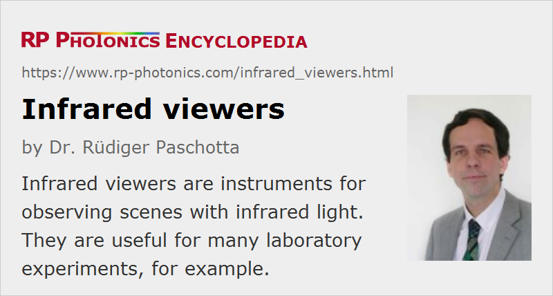

Infrared Viewers
Definition: instruments for observing scenes with infrared light
German: Infrarotsichtgeräte
Categories: photonic devices, light detection and characterization, vision, displays and imaging
How to cite the article; suggest additional literature
Author: Dr. Rüdiger Paschotta
In laboratories, one is often dealing with infrared light, e.g. in the form of infrared beams emitted by lasers. It can then be difficult e.g. to follow a beam path or to check a beam position without any visual aid. Therefore, one often uses infrared viewers (IR viewers), i.e., devices which effectively make infrared light visible. One can look into the ocular lens (eyepiece) of such a viewer and see an image which is created from infrared light entering the device through the objective on the opposite side.
Operation Principle
The basic operation principle of an infrared viewer is as follows:
- Infrared light from some source, entering the objective, is imaged onto some image converter. That device has a photocathode (a photosensitive area) inside an evacuated tube where photoelectrons can be generated by incident infrared radiation.
- The generated photoelectrons are accelerated by a strong electric field (created by applying a high voltage of e.g. several kilovolts) and then hit a phosphor on the opposite side of the tube. There, the electrons cause the phosphor to glow; depending on the type of phosphor, the color of the emitted light may e.g. be green. (The emitted light color is independent of the wavelength of the radiation hitting the photocathode.) As electrons generated on different locations on the photocathode are sent to different locations on the phosphor, a visible image is created there.
- The visible light can then get through the ocular into an eye of the user, so that a visible image can be generated on the retina.
The precise technology used in the image converter is usually not revealed in product descriptions, except for the used photocathode material, which determines the spectral response (see below).
Observing Laser Beams and Light in Optical Fibers
Of course, only light entering the objective of the viewer device can contribute to a perceived image. That is not the case for a laser beam not entering the device. However, some tiny part of the power of a laser beam may be scattered in air (e.g. at dust particles) and therefore nevertheless create a visible image of the laser beam, if its optical power is high enough and the observation distance is not too large.
In practice, one often does not directly observe laser beams, but only randomly scattered light which one obtains when a laser beam is hitting some diffusing surface of a white card or screen, for example.
Light propagating in optical fibers can also often be observed due to scattering of light at inhomogeneous of the fiber core or the core–cladding interface. In case of active fibers (rare-earth-doped fibers), one can often observe fluorescence light from the laser-active ions. Of course, one does not obtain any information on the emitted wavelengths.
Spectral Response
Image converters have a strongly wavelength-dependent sensitivity. Many of the used materials have a high sensitivity for visible light – which can be useful, because this allows one to see not only the infrared radiation or objects hit by that radiation, but also any objects illuminated by normal daylight or room lights. In addition, they are sensitive to some part of the infrared spectrum. For some devices, the sensitivity falls off quite rapidly above for certain critical wavelength (e.g. 1.3 μm), while for others it decreases quite smoothly for longer and longer wavelengths. Particularly in the latter case, the usable wavelength range depends on the intensity of the observed infrared light, because the lower sensitivity sufficient if the incident intensity is high enough.
For work in the area of optical fiber communications, it is normally sufficient to have a near infrared viewer working up to wavelengths around 2 μm, because light with longer wavelengths could anyway not be transmitted through silica fibers, and one usually deals with light only up to ≈1.6 μm.
Even within the usable wavelength range specified by the manufacturer, the sensitivity can vary enormously. The observable intensity levels may vary by more than a factor of 100 within that wavelength range. For example, a near-infrared viewer with the common S1 photocathode material (Ag-O-Cs: based on silver oxide, doped with cesium, used since 1930) is said to be usable for about 0.4 μm to 1.2 μm or even 1.3 μm; it is reasonably sensitive to 1064-nm light from a YAG laser (although much less than at 0.8 μm), while far higher intensities are required to see anything at 1.2 μm or even 1.3 μm.
There are also mid- and long-wave infrared cameras which can be used at substantially longer wavelengths, but these are usually not considered as viewers, since they provide an electrical output instead of a directly visible image.
Features of Practical Interest
Most infrared viewers are hand-held devices which are battery operated (possibly with rechargeable batteries). They are hold with a handle, and with one finger one can press a button which turns the image converter on. By activating it only while needed, one can reach a longer battery life. (Several hundred hours of continuous operation are often possible.) Some devices can be fixed to the head of the observer with some facemask, so that hands-free operation becomes possible. Also, viewers are often mounted in a fixed position, if one always needs to observe the same small area. Using an external power supply instead of a battery may then be practical.
The obtained image quality depends substantially on the used device and is usually much lower than that of a normal camera for visible light:
- The image resolution can be relatively poor; even if the objective is properly focused according to the used observation distance. (When wearing laser safety goggles at the same time, the achieved image quality may be further reduced.)
- In addition, some devices exhibit unavoidable black spots in the image.
- Also, there are often substantial image distortions, depending on the type of image converter used.
It may be difficult to judge the transverse intensity profile of a laser beam, for example, if the beam diameter is (as usual) relatively small (e.g. below 1 mm). Therefore, an infrared viewer can never be regarded as a replacement for a beam profiler camera.
With some viewers, it is possible to attach additional filters to the objective – for example, for suppressing influences of visible light. Also, there are close-up lenses, with which one can observe nearby objects with higher magnification; that can be useful, for example, when working with fiber optics.
In contrast to night vision devices, for infrared viewers in laboratory use it is not common to have binoculars; the usual devices are for one eye only. It can actually be advantageous to have “normal” vision with one eye while using a viewer, e.g. because of the very restricted angular range of the viewer.
A low-cost alternative to an infrared viewer can be an infrared sensor card; this also allows one to follow a beam path, for example, but is more limited in its application.
Suppliers
The RP Photonics Buyer's Guide contains 14 suppliers for infrared viewers. Among them:
Questions and Comments from Users
Here you can submit questions and comments. As far as they get accepted by the author, they will appear above this paragraph together with the author’s answer. The author will decide on acceptance based on certain criteria. Essentially, the issue must be of sufficiently broad interest.
Please do not enter personal data here; we would otherwise delete it soon. (See also our privacy declaration.) If you wish to receive personal feedback or consultancy from the author, please contact him e.g. via e-mail.
By submitting the information, you give your consent to the potential publication of your inputs on our website according to our rules. (If you later retract your consent, we will delete those inputs.) As your inputs are first reviewed by the author, they may be published with some delay.
See also: infrared light, beam profilers, laser viewing cards
and other articles in the categories photonic devices, light detection and characterization, vision, displays and imaging
|  |
If you like this page, please share the link with your friends and colleagues, e.g. via social media:
These sharing buttons are implemented in a privacy-friendly way!